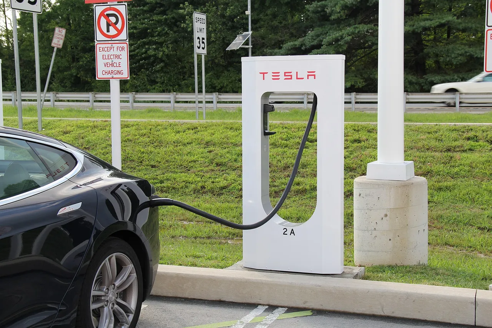
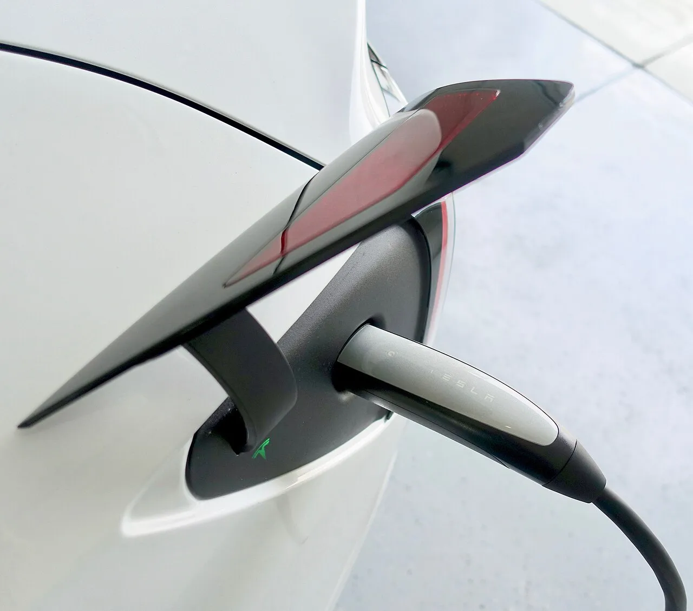
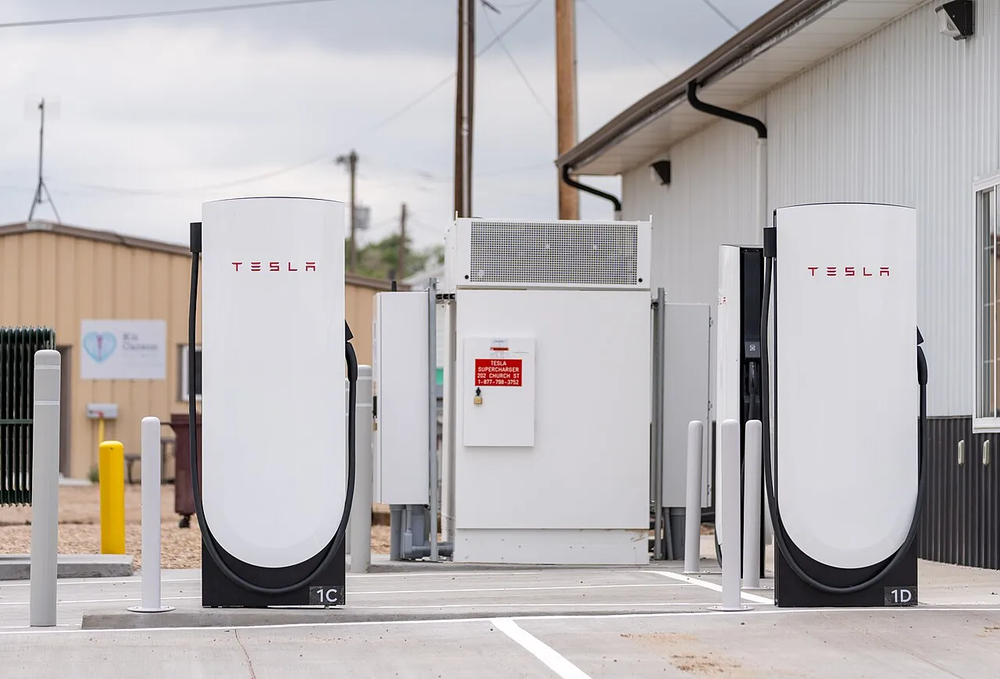
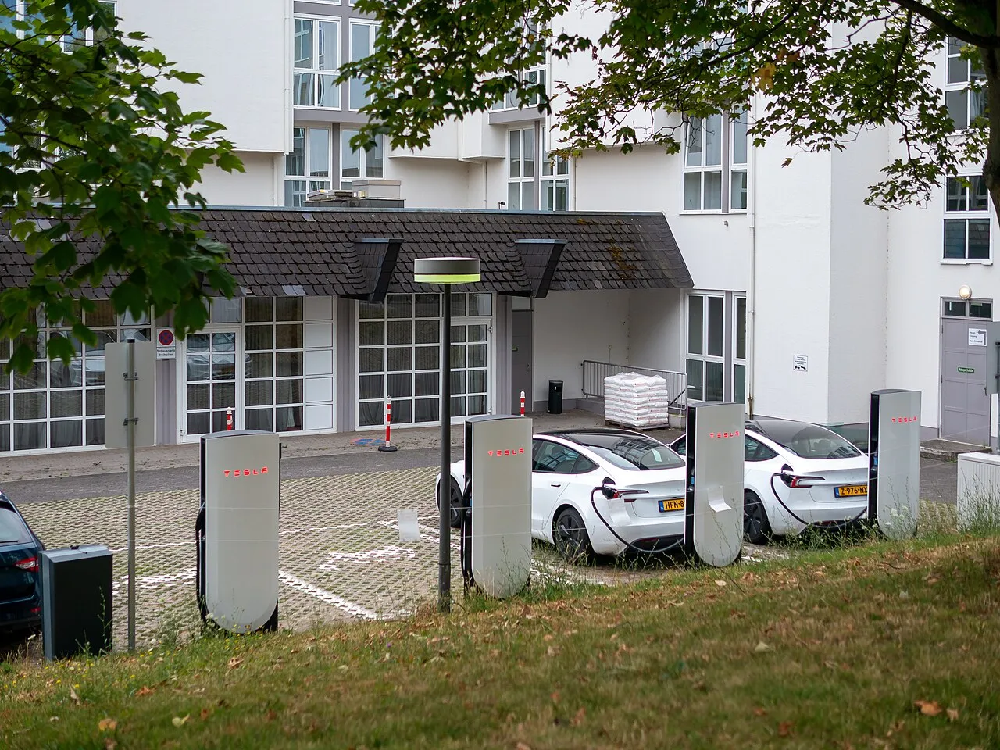
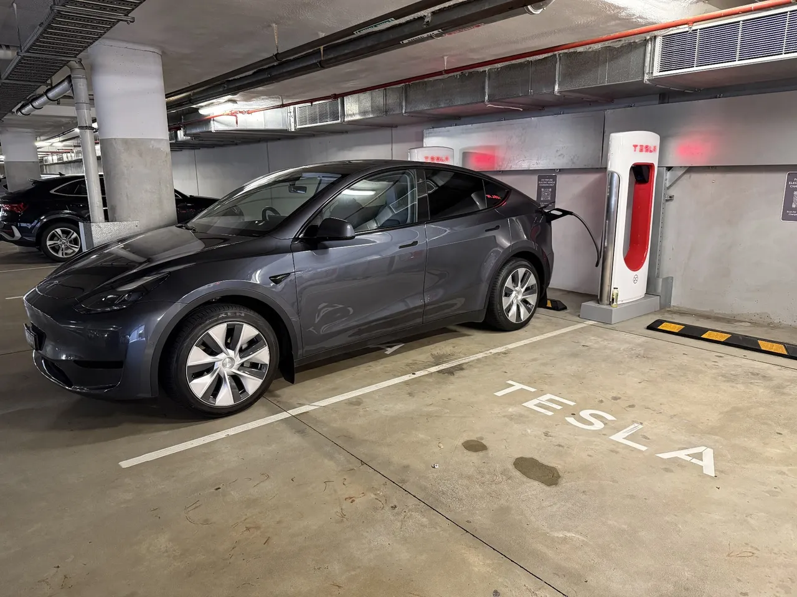
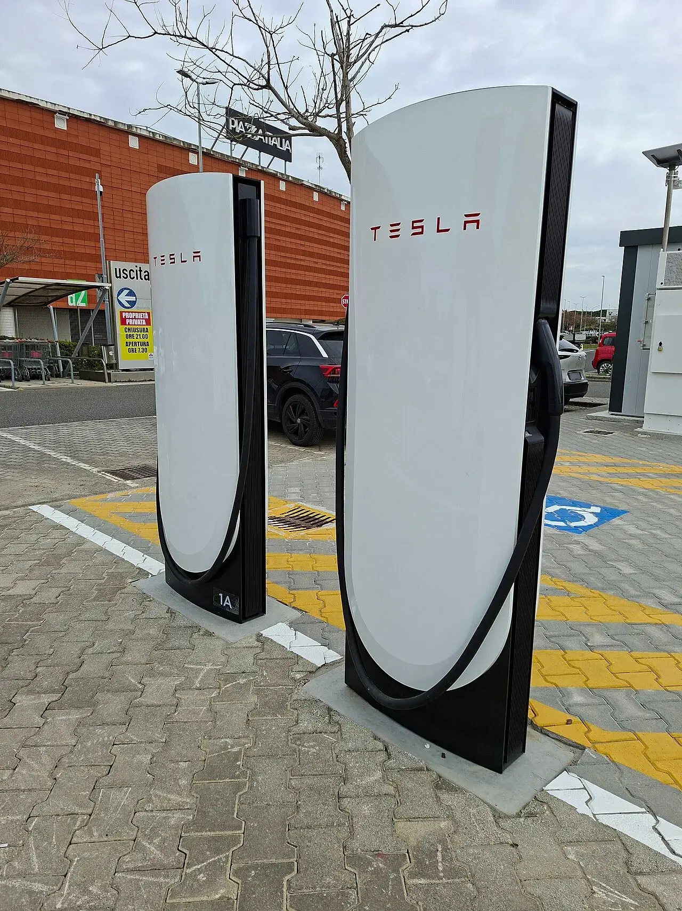
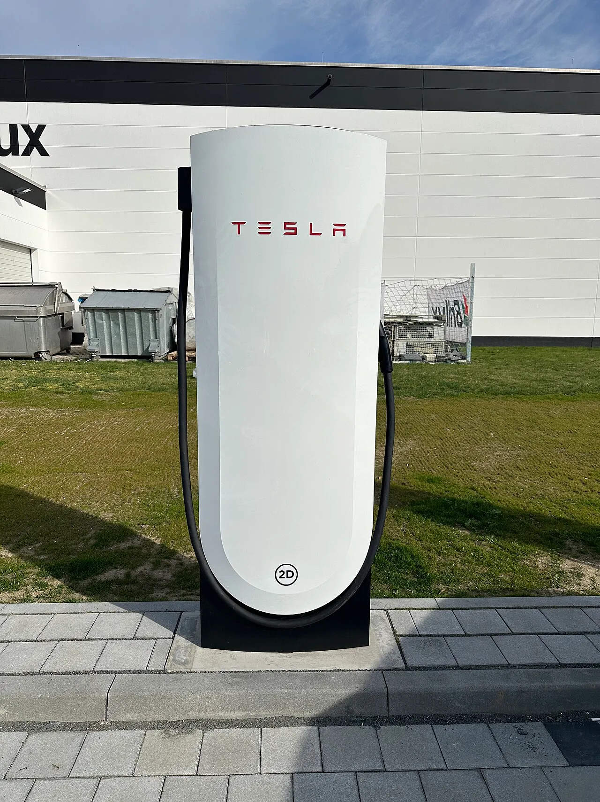
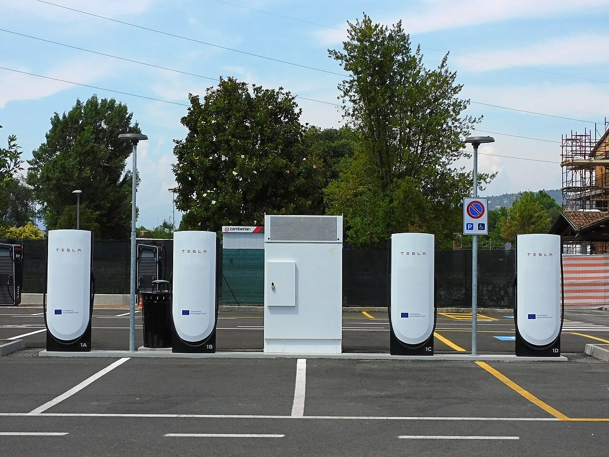
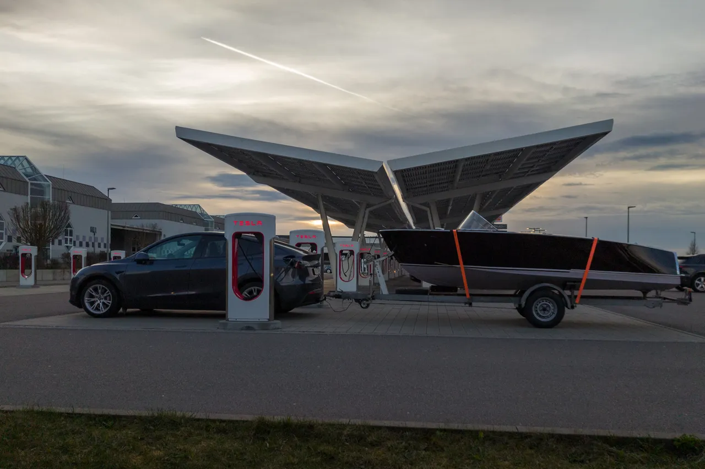

▲ 슈퍼차저에서 충전 케이블을 잡은 운전자(일반 충전 장면, 사건 현장과 무관) Jeffrey Beall(Wikimedia Commons, CC BY 4.0)
"케이블이 꽂힌 채로 기어를 D에 넣을 수 있다." 테슬라가 소프트웨어 2026.38.3에서 슈퍼차저 충전 중에도 비상 시 차를 몰고 빠져나갈 수 있는 '비상 이탈(Emergency Drive Away)' 기능을 넣었다. 8월 1일 미국 아이다호주 트윈폴스 슈퍼차저 인근 총격 사건에서 충전 중이던 운전자가 차를 움직이지 못한 일이 계기로 지목된다. 그런데 화면 경고와 릴리스 노트 모두 차량과 슈퍼차저가 손상될 수 있다고 경고하고, 테슬라 충전팀은 복구 비용이 "최대 2만5000달러"까지 갈 수 있다고 밝혔다. 문제는 그 돈을 누가 내는지 테슬라가 답하지 않았다는 점이다.
충전 안전 사각지대 자체는 8월 기사 테슬라 슈퍼차저가 감춘 허점에서 다뤘다. 이 글은 그 뒤 나온 실제 해법의 작동 조건, 비용 근거, 한국 운전자가 알아둘 점에 집중한다.

▲ 스톨에서 차량 충전구로 케이블이 이어진 모습(검은색 테슬라, 파일명 기준 모델 S). 충전 중에는 이 케이블이 차에 연결돼 평소엔 기어를 D에 넣을 수 없다(일반 충전 장면이며 사건 현장과 무관) Jeff Cooper (jecoopr)(Wikimedia Commons, CC BY 2.0)
1. 어떻게 작동하나 — 확인된 동작 조건
평소 슈퍼차저에 꽂힌 테슬라는 커넥터가 충전구에 잠겨 있고 주행이 막힌다. 화면의 '충전구 잠금 해제'를 누르거나 핸들 버튼으로 풀어야 기어를 넣을 수 있다. 2026.38.3에서는 이 상황에서 D를 넣으면 거부 대신 비상 이탈 안내가 나온다. 아래는 매체들이 인용한 화면 경고문·릴리스 노트·테슬라 답변을 카프리즘이 항목별로 대조한 표다.
| 항목 | 확인된 내용 | 출처·비고 |
|---|---|---|
| 소프트웨어 | 2026.38.3, 무료 OTA | Tesla Oracle·Basenor·오토헤럴드 |
| 조작 | 브레이크를 밟은 채 D 또는 R → 경고창 → 'Activate' | Basenor·오토헤럴드. EVXL은 "Activate를 두 번 탭"이라고 적어 보도마다 단계 표현이 다름 |
| 화면 경고문 | "Cannot shift while connected to a Supercharger. Activate Emergency Drive Away to override." … "Use only in emergency." 브레이크를 누른 채 Activate를 탭 | Tesla Oracle가 소개한 차량 화면 문구(릴리스 노트가 아님). 원문 페이지는 직접 열람하지 못함 |
| 릴리스 노트 문구 | "Intended for emergency use only. Use of this feature will damage your vehicle and the Supercharger. Deliberate misuse will invoke additional penalties." | Tesla Oracle·Electrek이 릴리스 노트 문구로 인용. 릴리스 노트 원문 페이지는 직접 열람하지 못함 |
| 충전기 | 슈퍼차저 V2·V3·V4. 가정용 충전기에는 미적용 | Electrek 본문에서 직접 확인("works on V2, V3, and V4 stalls", "doesn't work on home chargers") |
| 케이블 분리 | 핸들이 포트에서 떨어져 바닥에 떨어짐(break away) | Shacknews·EVXL. 분리 속도 등 세부 조건은 어느 보도에도 없음 |
| 차종 | 모델 3·Y·사이버트럭·2021년 이후 모델 S/X. 2021년 이전 S/X 제외 | EVXL·오토헤럴드·Shacknews |
| 지역 | 미국 슈퍼차저 한정 | Tesla Oracle("US only")·InsideEVs·오토헤럴드. 캐나다는 미공지(Drive Tesla Canada) |
| 영상 전송 | 사용 시 카메라 영상(전·후방 이벤트 녹화)이 테슬라로 전송됨 | Drive Tesla Canada("sends event recordings to Tesla")·Basenor·오토헤럴드(전·후방 카메라 녹화 서버 전송). 보관 기간·열람 주체 등 세부는 보도에 없음 |
📍 1차 자료를 직접 열었나
테슬라 오너스 매뉴얼과 슈퍼차저 지원 페이지는 접속 시 403 오류가 나 원문을 직접 확인하지 못했다. 릴리스 노트 문구와 테슬라 충전팀 답변은 Tesla Oracle·Basenor·InsideEVs·Electrek가 인용한 내용이다. 여러 매체의 인용이 일치하는 부분만 사실로 적었고, 갈리는 부분(활성화 탭 횟수)은 그대로 표기했다. 일부 원문은 직접 열람하지 못했다.

▲ 충전구에 커넥터가 꽂힌 모습. 충전 중에는 이 커넥터가 포트에 잠기며, 비상 이탈을 쓰면 이 부분이 손상될 수 있다고 경고된다(차종·연식은 사진으로 확정하지 않음) Steve Jurvetson(Wikimedia Commons, CC BY 2.0)
2. 왜 이런 기능이 나왔나 — 트윈폴스 사건과 기존 대안
드라이브 테슬라 캐나다와 EVXL은 8월 1일 아이다호주 트윈폴스 인앤아웃 인근 슈퍼차저에서 발생한 총격을 계기로 지목했다. 차에 꽂힌 케이블 때문에 도망치기 어려웠던 운전자가 보도됐고, 사망자 수 등 사건 세부는 이 글에서 확정하지 않는다.
사건 직후 오너들은 비상 시 충전구를 풀어주는 기능을 요구했고, 보조 장치인 EVject(299달러 분리형 커넥터)가 다시 거론됐다. Electrek는 이를 "오너들이 추천하기 시작한 299달러짜리 분리형 어댑터"로 소개했다. 테슬라는 2024년 EVject를 과열 우려를 이유로 고소했고, Drive Tesla Canada에 따르면 EVject는 초기 커넥터를 회수했고(EVject 동의), Electrek는 EVject가 열 보호를 넣은 개선판을 냈다고 전한다. 이번 기능은 부품 없이 차량 소프트웨어만으로 같은 목적을 달성하되, 손상을 감수하는 방식이라는 점이 다르다.
| 수단 | 방식 | 장점 | 한계 |
|---|---|---|---|
| 일반 해제 | 화면 '충전구 잠금 해제'·핸들 버튼 | 손상 없음 | 해제와 케이블 정리까지 시간이 걸림 |
| 충전구 비상 해제 케이블 | 트렁크 안쪽 수동 해제(검색 결과 요약 기준) | 전원 불량에도 가능 | 차에서 내려야 해 위급 상황에선 비현실적 |
| EVject 분리형 커넥터 | 핸들과 포트 사이 어댑터가 분리 | 손상을 어댑터에 집중 | 299달러 별매, 테슬라와 분쟁 이력 |
| 비상 이탈(신규) | D 입력 후 Activate, 핸들 분리 | 추가 부품 없음, 즉시 출발 | 차량·충전기 손상, 서비스 방문 필수 |

▲ V4 슈퍼차저 스톨. 비상 이탈은 V2·V3·V4에서 동작한다고 보도됐다 Tony Webster(Wikimedia Commons, CC BY 4.0)
3. "최대 2만5000달러"는 어디서 나온 숫자인가
제목에 오른 2만5000달러는 약관의 위약금 조항이나 확정 청구액이 아니다. Electrek(프레드 램버트, 10월 2일)과 Tesla Oracle은 소유자들의 질문에 대한 테슬라 충전팀의 답변을 근거로 든다. 인용된 문장은 "Depends on the Supercharger, but electrical & civil cost can be up to $25k."이다. 즉 충전기 위치·구조에 따라 달라지는 전기·토목 복구 비용의 상한 안내로, 누가 이 금액을 부담하는지는 포함되어 있지 않다.
| 쟁점 | 확인된 것 | 확인 안 된 것 |
|---|---|---|
| 수치의 출처 | 테슬라 충전팀의 답변(Electrek·Tesla Oracle 인용) | 슈퍼차저 이용약관 조항 여부 — 약관 원문을 열람하지 못했고 보도에도 조항 언급이 없다 |
| 성격 | "up to" 상한, 전기·토목 비용 | 평균 수리비, 실제 청구 사례 |
| 청구 주체 | "고의 오용에는 추가 불이익"(경고문 인용) | 정당한 비상 사용자가 부담하는지 — 테슬라가 질문에 답하지 않았다(Electrek) |
| 차량 쪽 비용 | 충전구 서비스 방문 필수. Tesla Oracle는 부품가 도어 350달러+포트 350달러(공임 별도)를 전함 | 서비스 비용을 테슬라가 면제하는지 |
| 보증 | Tesla Oracle는 이 손상이 보증 대상이 아니라고 전했다 | 테슬라 공식 문서로는 직접 확인하지 못함. 보험·약관상 처리는 보도 없음 |
| 냉각액 누출 | Electrek에 따르면 슈퍼차저 정리는 테슬라가 서비스 방문으로 처리 | - |
오토헤럴드는 정당한 이유 없이 사용하면 충전기·차량 수리 비용이 청구될 수 있다는 취지로 정리했다. 반면 Electrek는 정당한 비상 사용자도 부담하는지 테슬라가 답하지 않았다고 지적한다. 두 보도는 '오용 시 청구'라는 점은 같고, '정당한 사용도 청구되는가'는 미확정이라는 점에서 충돌하지 않는다.
| 항목 | 값 | 계산·가정 |
|---|---|---|
| 보도된 상한 | $25,000 | 테슬라 충전팀 답변 |
| Electrek 비교 | 신규 포스트 하드웨어 비용의 약 40% | Electrek 본문이 "신규 슈퍼차저 1기(post)당 $62,500"의 40%라고 병기. 카프리즘이 25,000÷0.4=62,500으로 검산(공식 단가 아님) |
| 원화 환산 예시 | 약 3,500만 원 | 1달러=1,400원으로 가정한 예시이며 실제 환율과 다를 수 있음 |
환율·부품가 가정별 민감도
'최대 2만5000달러'가 한국 돈으로 얼마인지, 차량 쪽 부품가까지 더하면 어떻게 되는지 환율 3가지로 계산했다. 가정: 충전기 쪽 $25,000(상한 안내), 차량 쪽은 Tesla Oracle가 전한 부품가 충전구 도어 $350+충전구 $350=$700(공임·서비스료 제외). Tesla Oracle 본문은 $350+$350이고 이 글이 인용한 오너 글은 $350+$345로 단가가 갈리는데, 여기서는 본문 기준을 쓴다. 둘을 단순 합산한 값은 가능한 상한 시나리오일 뿐 실제 청구액 예측이 아니다.
| 환율(원/달러) | 충전기 쪽 $25,000 | 차량 부품 $700 | 합산 $25,700 |
|---|---|---|---|
| 1,300 | 약 3,250만 | 약 91만 | 약 3,341만 |
| 1,400 | 약 3,500만 | 약 98만 | 약 3,598만 |
| 1,500 | 약 3,750만 | 약 105만 | 약 3,855만 |
수식은 달러 금액×환율÷10,000이다. 눈여겨볼 점은 차량 쪽 부품가는 합산의 3% 안팎($700÷$25,700≈2.7%)이라는 것이다. 즉 문제의 본질은 내 차 수리비보다 충전기 쪽 복구 비용을 누가 지느냐다. 환율 가정은 예시이므로 실제 시점의 환율로 다시 계산해야 한다.

▲ V4 슈퍼차저 스톨과 충전 중인 테슬라(독일 비스바덴). 한국과 무관한 참고 사진이다 Matti Blume(Wikimedia Commons, CC BY-SA 4.0)
4. 한국 운전자 관점 — 무엇이 다르고 무엇을 알 수 없나
가장 먼저 짚을 점은 이 기능이 미국 슈퍼차저에서만 지원된다고 보도됐다는 것이다. 한국 적용 계획은 어느 보도에서도 확인하지 못했다. 국내 오너라면 업데이트 번호가 같아도 비상 이탈이 열린다고 단정하면 안 된다. 한국의 슈퍼차저 환경(충전기 세대, 약관, 시설 관리 주체)은 이 기사의 전제인 미국 약관과 다를 수 있어, 비용 책임 문제도 그대로 이식할 수 없다.
| 항목 | 미국(보도 기준) | 한국 |
|---|---|---|
| 기능 제공 | 2026.38.3, 미국 슈퍼차저 | 적용 보도 없음, 확인하지 못했다 |
| 타사 급속충전기 | 해당 없음(슈퍼차저 한정) | 타사 충전기에서 이 기능이 동작한다는 보도는 없다 |
| 기본 안전 설계 | 충전 중 기어 인터록 | 오토헤럴드는 현대차그룹·벤츠·BMW·폭스바겐·포르쉐도 충전 중 변속 방지 인터록을 유지한다고 전함 |
| 비용 책임 | 테슬라 미답변 | 국내 약관·보험 처리는 확인하지 못했다 |

▲ 실내 주차장의 슈퍼차저 충전 장면(호주 노스쿠기, 파일명 기준 모델 Y). 차가 충전기와 케이블로 이어진 상태가 이 글의 비상 이탈이 적용되는 상황이다(한국과 무관한 참고 사진) Leesieoh(Wikimedia Commons, CC BY-SA 4.0)
충전 커넥터의 종류와 국내 규격 차이는 전기차 충전 커넥터 종류 가이드를 참고하면 된다. 슈퍼차저 인프라 확장 흐름은 접이식 슈퍼차저 기사와 GM NACS 기사에서 다뤘다.
📍 인터록이 없는 게 아니라 '있는 게 정상'이다
충전 중 차를 움직이지 못하게 하는 것은 케이블 파손과 감전을 막기 위한 표준 설계다. 오토헤럴드는 현대차그룹(E-GMP)·벤츠·BMW·폭스바겐·포르쉐 등이 따른다며 국제규격 ISO 17409(전기 도로차량 전도 충전 안전 요건)와 SAE 규정을 근거로 들었다. 구체 조항 번호는 보도에 없어 이 글에서도 확정하지 않는다. 이번 기능은 이 안전장치를 의도적으로 우회하는 예외이므로, 평소 습관처럼 쓰는 기능이 아니다.

▲ 나란히 선 V4 슈퍼차저 스톨 2기(이탈리아 리보르노, 2026년 촬영). 한국 슈퍼차저와 구조가 같다고 확정하지 않는다 Marcxosm(Wikimedia Commons, CC0)
5. 비상 대처 체크리스트 — 충전 중 위협을 느꼈을 때
아래는 보도된 기능 조건과 일반 안전 원칙을 정리한 카프리즘의 체크리스트다. 한국에서 이 기능이 동작한다는 뜻이 아니다. 국내에서는 비상 상황 시 112 신고가 우선이다.
✅ 충전 중 위협 상황 대처 순서
- 1. 먼저 상황 판단: 걸어서 안전한 곳으로 이동 가능한지, 차 안이 더 안전한지 판단한다. 차에서 내릴 수 있다면 충전구 잠금 해제로 정상 분리하는 것이 손상이 없다
- 2. 미국 슈퍼차저에서 도피가 불가피하면: 브레이크를 밟은 채 D 또는 R, 경고창 확인 후 Activate(2026.38.3 이상, 지원 차종 한정)
- 3. 한국에서는: 기능 지원 여부가 확인되지 않았으므로 기능에 의존하지 말고 112 신고, 충전기 비상정지 버튼, 사람이 많은 곳으로 이동이 우선이다
- 4. 안전해진 뒤: 911(미국)·112(한국) 신고 후 테슬라에 상황을 알린다(Basenor 안내 요지)
- 5. 서비스 방문: 비상 이탈을 썼다면 충전구 점검이 필수다. 증빙으로 신고 접수 내역을 보관한다
- 6. 평소 준비: 소프트웨어 버전 확인(제어 → 소프트웨어), 충전 시 주변이 밝고 개방된 곳 선택, 핸들 위치 숙지
충전이 시작되지 않거나 잠금이 풀리지 않는 일반 문제는 전기차 충전 안 될 때 점검 가이드에서, 화재 등 차량 자체 위험은 전기차 화재 대응 가이드에서 다뤘다.

▲ 단독 V4 슈퍼차저 스톨(독일 바이로이트 추정, 파일명 기준). 충전기 구조 설명용 사진 Michael Wolf(Wikimedia Commons, CC BY-SA 3.0)
6. 남은 쟁점 — 정당한 비상 사용은 누가 증명하나
가장 큰 논쟁은 비용이 아니라 정당성 판단 기준이다. 테슬라는 영상 공유로 오용을 가려내겠다는 구조지만, 무엇이 '진짜 비상'인지의 기준은 공개하지 않았다. Electrek는 이 모호함이 정작 위기 순간에 운전자의 망설임을 키울 수 있다고 지적한다. 책임 소재가 약관에 명시되기 전까지 불확실성은 남는다.
| 질문 | 현재 상태 |
|---|---|
| 정당한 비상 사용 시 수리비 부담 주체 | 테슬라 미답변(Electrek) |
| '고의 오용'의 기준과 불이익 내용 | "추가 불이익"만 경고문에 명시 |
| 서비스 방문 비용 면제 여부 | 보도 없음 |
| 한국 등 해외 확대 | 캐나다 포함 미공지, 한국 확인 못 함 |
| 타사 충전기 확대 | 보도 없음 |

▲ 여러 대가 늘어선 V4 슈퍼차저(이탈리아 브레시아, 파일명 기준 2026년 6월 촬영). 이번 기능과 무관한 참고 사진이다 Moliva(Wikimedia Commons, CC BY-SA 4.0)
7. 자주 묻는 질문
Q1. 한국 테슬라에서도 쓸 수 있나?
확인하지 못했다. 보도들은 미국 슈퍼차저 한정이라고 전하고 캐나다도 미공지다(Drive Tesla Canada). 소프트웨어 번호가 같아도 한국에서 열린다고 단정할 수 없다.
Q2. 쓰면 무조건 2만5000달러를 내나?
아니다. 2만5000달러는 충전기 위치에 따라 전기·토목 비용이 "최대" 이 정도까지 갈 수 있다는 테슬라 충전팀 안내이고, 실제 청구 사례나 평균은 알려지지 않았다. 다만 정당한 비상 사용자도 부담하는지는 테슬라가 답하지 않았다(Electrek).
Q3. 실수로 눌러서 작동할 수 있나?
보도된 조작은 브레이크를 밟은 채 D 또는 R을 넣고, 경고창에서 Activate까지 눌러야 하는 다단계다. 한 번의 실수 조작만으로 분리된다는 보도는 없지만, 실제 오작동 사례 여부는 아직 확인되지 않았다.
Q4. 쓰고 나면 무엇을 해야 하나?
Electrek는 충전구 서비스 방문이 필수라고 전했다. 안전한 곳에 도착한 뒤 신고하고 접수 내역을 보관해 두는 것이 좋다. 블랙박스 영상을 증빙으로 제출하는 방법은 블랙박스 영상 경찰 제출 가이드에 정리했다.
Q5. 충전기 부족 같은 불만은 별개 문제인가?
그렇다. 이 글은 충전 중 안전 이슈만 다룬다. 국내 충전 이용자가 실제로 겪는 불편은 전기차 충전 실사용 문제 조사를 참고할 수 있다.

▲ 태양광 캐노피가 있는 슈퍼차저 구역(독일 라이힝엔, 2026년 3월 촬영 파일명 기준). 한국 슈퍼차저와 구조가 같다고 확정하지 않는다 Matti Blume(Wikimedia Commons, CC BY-SA 4.0)
8. 요약
테슬라 2026.38.3의 '비상 이탈'은 슈퍼차저에 꽂힌 채 D로 출발해 커넥터를 분리하는 기능이며, 미국 슈퍼차저 한정으로 보도됐다. 한국 적용은 확인하지 못했다.
'최대 2만5000달러'는 약관 조항이 아니라 테슬라 충전팀 답변에 나온 전기·토목 복구 비용 상한이다. 정당한 비상 사용자가 이를 부담하는지는 테슬라가 답하지 않았다.
사용 후 충전구 서비스 방문이 필수이며 고의 오용에는 추가 불이익이 경고된다. 오너스 매뉴얼·약관 원문은 직접 열람하지 못해 보도 인용 기준이다.